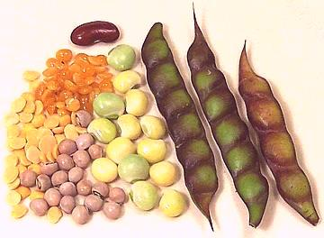

Pigeon Peas

[Gandule, Grandul, Alverja (Spanish); Guandu (Portugal); Toor, Tur,
Tuvar, Red Gram, Arhar (India); Congo Pea, Gunga Pea, No-eye Pea;
Pois d'Angole (France); Cajanus cajan]
Probably originating in India, pigeon peas were established in East
Africa thousands of years ago and were brought to the Caribbean with the
slave trade. They are now grown in all tropical and semi-tropical regions
of the world, but until recently were almost unknown in mainland North
America.
Pigeon peas are important in African, Caribbean and Central American
cuisines, and essential to the cuisines of southern India where Toor Dal
is the basic ingredient for sambars and required in many other dishes.
The "red" in Red Gram refers to the color of the flowers. The photo
shows peeled and split oiled dal (obsolete, but still sold for
traditional cooks), dry dal, whole dried peas, whole fresh peas and
whole ripe pods. The whole dried are often sprouted before cooking.
More on Beans, Peas & Lentils.
Dried:
Dried peas and dal (peeled and split) are available
in any market serving an Indian or hispanic community. In Indian markets,
the dal will be available in two forms, regular and oiled. The oil is to
preserve freshness, but in today's markets, with high speed transportation,
it is no longer necessary, so the oiled has become more tradition than need.
I would not use it unless a recipe specifically called for it - it needs to
be washed thoroughly before use.
Canned:
Canned Green Pigeon Peas are now quite available
in U.S. in markets serving Hispanic or Caribbean communities. Goya is the
predominant brand. These peas are canned fresh, rather than dried and soaked,
as are most canned beans, so they are an acceptable substitute if fresh or
frozen are not available.
Frozen:
Frozen are a good substitute for Fresh Pigeon Peas,
but only available in regions with large Caribbean or Indian communities.
Fortunately, the Canned Green Pigeon Peas are made from fresh peas, not
dried and re-hydrated, so make a satisfactory substitute.
Buying Fresh:
Pigeon peas in the pod are sometimes
available at ethnic stands in farmers markets, particularly Southeast
Asian and Indian. Fresh pods should show plump peas inside and should
have strong color. Yellow or pale pods indicate poor quality.
Shelling:
If you buy peas in the pod, keep them in the
pod until ready to use. Then boil them for 5 to 7 minutes and they'll be
easy to shell (and you were about to cook them anyway).
Soaking:
Whole dried pigeon peas need to be soaked at
least 6 hours. 1 cup of peas to 2-1/2 cups of water and 1/2 tablespoon
of salt (Yes, salt, see our Soaking /
Brining Dried Beans page). Dal is not soaked unless specifically
called for by the recipe (soaking is said to changes its texture).
Cooking:
For Dal, see below. Soaked whole pigeon peas
take about 1/2 hour to cook through but will still be quite firm on the
outside and intact. Cooking longer makes little difference, that's just
how pigeon peas are. Unsoaked peas should be cooked for at least 2
hours and they'll still be tougher than soaked peas.
Sprouting:
Whole pigeon peas are often sprouted before
cooking. Sprout them the same as any other beans, but to the style
preferred in India. The peas are ready to cook when they have a root tail
about 1/2 inch long and the leaf end is just starting to emerge.
Toor Dal / Toover Dal / Arhar Dal / Red Gram:
In this
split and peeled state pigeon peas are not soaked before cooking,
unless a recipe specifically calls for it.
Because it's called for in so many recipes from southern India, you
may wish to cook enough for several recipes. It will keep a week or so
in a sealed container in the refrigerator. Use twice the measure the
recipe calls for in uncooked toor dal.
- If the dal is oiled wash it thoroughly to remove the oil.
- If the dal is not oiled wash it thoroughly in several changes of
water to reduce foaming. Alternatively, you can shake it vigorously
in a wire strainer under hot running water.
- For 1 c dal put in a sauce pan with 2-1/3 cups of water if cooking
1 hour, 2-1/2 cups if cooking 1-1/2 hours. Use a sauce pan with plenty
of head space because it will foam up when it comes to a boil.
- Bring to a boil uncovered (or it'll foam over). If making more than
1/3 cup, I use a skimmer to remove the pile of foam that rises. Simmer
covered over very low heat for at least 45 minutes, or as called for
by the recipe. Rasams often call for 1-1/2 hours, stirred now and then
for the last 30 minutes.
- When done, it should have some free liquid remaining, but if it has
a lot you can put it at a fast simmer uncovered to adjust.
bp_pigionz 071028 - www.clovegarden.com
©Andrew Grygus - agryg@clovegarden.com - Photos
on this page not otherwise credited © cg1
- Linking to and non-commercial use of this page permitted